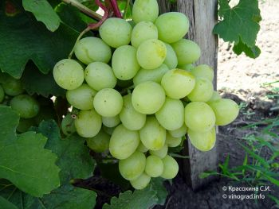

Дар'я

Термін дозрівання - ранній.
Квітка двостатева. Грона великі, конічні і ширококонічні, середньою масою 589 г, окремі до 800 г. Ягода велика,
яйцеподібна, середньою масою 12,3 г, від молочно-білого до ніжно-жовтого кольору. М'якоть м'ясисто-соковита, шкірка
середньої товщини і щільності, в смаку дуже приємний мускатний аромат Цитрон типу. Кущі великої сили росту.
Стійкість до грибних хвороб середня, вимагає укриття кущів на зиму.